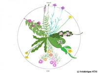
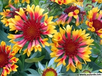

Les fleurs en zones urbaines
L'implantation des fleurs dans les villes occupe traditionnellement
des espaces bien délimités, corridors verts, plate-bandes, parcs et
jardins publics ou privés. La multiplication de mobiliers urbains sous
forme de cubes ou de pots généralise leur occupation, au risque de les
exposer aux pollutions urbaines, agressions diverses et sécheresses
prolongées. Elles demandent en conséquence beaucoup plus d'attention.
Choix des fleurs
Choisissez
toujours des plantes adaptées à votre région, à son climat
spécifique, à sa terre, et à l'exposition de votre jardin. Elles
pousseront naturellement, seront rarement malades et bien plus
florifères sans effort de votre part.
La ville qui représente
un micro-climat du fait de l'activité humaine et de la hausse des
températures conséquentes, offre aussi la possibilité d'expérimenter
des variétés de fleurs plus exotiques.
Réaliser l'horloge florale

Pour nombre d'entre elles, il note un cycle régulier, réglé sur le
soleil. A heure déterminée, les pétales se déplient, accueillent les
insectes. Puis se replient, se protègent, des agressions multiples.
A chacune ses créneaux horaires. L'horloge florale est une
thématique paysagère. Un massif circulaire regroupe par quartier les
fleurs montrant les mêmes horaires d'épanouissement.
Géranium
Famille: Géraniacées
Campsis
Famille: Bignoniacées
Glycine

Famille: Légumineuses
Agératum

Famille: Astéracées
Anémone
Famille: Renonculacées
Boltonia
Famille: Astéracées
Gaillarde

Famille: Astéracées
Etoile du texas

Famille: Malvacées